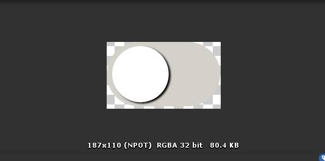

Jawbone3D: Individual Blog
This week was a busy one, as I was dividing my time between whole-group collaboration centered around the completion of our Previsualization documents; partial-group collaboration centered around tests using the Vuforia AR software development kit (SDK) for Unity; and individual work centered around researching our next steps with Vuforia and my role as Co-Project Manager with Bernadette.
In terms of the work we did as a team in order to finish of our Previsualization documents, we started compiling the necessary content in earnest last Thursday. The week prior was spent researching potential topics, and, once we had settled on something everyone was excited about and had an interest in, dividing up projects roles and setting some quick deadlines in order to create a project description. Our groups decided to pursue a dental anatomy app—mainly to do something outside of the “normal” anatomy we experienced in first-year—and in we knew wanted to develop something that would be useful for other students. Out of those vague ideas Jawbone3D was born, an augmented reality (AR) app that runs on iOS for iPads and is designed to allow dental students to explore dental anatomy and pathologies from perspectives they are unable to see in real patients, both because of literal anatomical limitations (folks mouths are only so large) and the prevalence of the pathology.
Once we had decided what are app was going to accomplish, the next step was determining what we wanted to visualize, and more realistically, what we could visualize given the limited scope and timeframe of the project. Julia and myself initially reached out to content experts we knew: her father, a practicing dentist in the U.S. and my friend, a current dental student finishing her degree this year. We used both as a source of information regarding what type of app would be useful for them, what they had difficulty learning in class or seeing in the clinic, and what they believed would help solve the problem. They provided us with interesting and often overlapping perspectives and helped narrow down how and where our app could be used, and what pathologies we should consider focusing on. At this point, Bernadette and Shawn dived into researching the pathologies our content experts mentioned and helped us make an appropriate choice that was a balance of practical for our purposes and abilities, interesting to visualize, and useful for dental students.
Having selected the type of app and the pathology we were going to pursue; the next step was creating the previsualization documents that would explain our apps intent and the functions it requires to be successful. We weren’t entirely sure what the previsualization documents needed to include; however, we knew it had to be a comprehensive enough guide that developers would be able to move on with the project even if we all fled to South America (or were hit by a bus if you prefer a darker timeline…). To that end we decided to include updated project goals, an updated project timeline, a walkthrough using relatively high-fidelity wireframes (as opposed to simple sketches), a section highlighting research and design production work that would be ongoing, and an appendix for relevant and useful information for the developers that wasn’t integral to the production process.
Out of the tasks listed above, the most time-intensive was the developer walkthrough, as it needed to cover all the functions our app could preform in a simple, logical way. To accomplish this, we split the work into a series of iterative tasks that built upon one another to generate the final walkthrough. To begin, I wrote a short user persona, and off that, built a context scenario for a first-time user. Julia then review these documents to add any missing functionality and ensure current functions made sense. While a user persona and context scenario weren’t entirely necessary for the previsualization documents, they are usually completed when designing an app like ours, and in addition I believe they provided an important opportunity to think about what our app needed to do from the perspective of a user. Constructing a document from a user perspective allows us to consider what issues users might run into, and what basic functionality is necessary that we may have otherwise overlooked. In addition, the context scenario provided a strong foundation for continued work. Shawn and Bernadette took the context scenario and built wireframe for each of its steps. They were then able to hand the wireframes back to Julia and myself, who provided feedback and made edits. Finally, we edited the context scenario to reflect the final wireframes, changed the tense of the document to suit the developers reading it, and compiled the document with our previous research and work. A few snapshots of the finished product can be seen below.
Alongside the previsualization documents, much of my week was spent testing AR implementation using the Vuforia AR SDK in Unity. We opted to use Vuforia under guidance from Michael Corrin, our Professor, and because it appears to be the gold standard for using AR in Unity. There is an extensive developer library online, in addition to a large volume of tutorials and demos on YouTube. Julia and I took this week to start researching and testing Vuforia, focusing on basic image tracking and moving to more complex model tracking.
Our first test was “simple” and involved printing unique image patterns that could be pasted onto the surface of a 3D cuboid and recognized by Vuforia+Unity. When recognised, the test app would place an AR cuboid of the same size and shape overtop the physical object. The test was a success, working easily in terms of the setup within Unity; however, we did run into snags with printing the unique patterns for each surface of the cuboid. Much of the setup process using Vuforia is automated—using features on their website you can create the databases needed to generate AR content. You then download the database and tell Unity how to apply it (this is an oversimplification, but it’s it in a nutshell). However, this means if things go awry when using their built-in website tools users are left with little recourse. Despite several rounds of research, troubleshooting, and testing, Julia and I couldn’t get things to work perfectly—but it was a start.
We then did a second round of testing with model recognition using Vuforia+Unity. Unlike the image patterns, model targets recognize complex 3D objects. Despite being more complicated, this process went much more smoothly than with the image patterns, as there were no bugs/errors working with Vuforia. We were able to map a 3D model of a “Zman” to a corresponding 3D print, although next week we’ll need to focus on being able to rotate around the object fully. Some photos and videos of our second test can be seen below.

That’s all for now, check back next week.
This stretch was another busy one, although much of the work on my part was done at the tail end of the week. Bernie and Shawn undertook the role UI design and spent the beginning of the week creating a series of (beautiful) icons based of the wireframes we worked on last week. While we won’t be worrying about their complete implementation until the coming weeks, Shawn did take the main icons—those used on the AR homepage—and save them as PNGs for me to utilize in a basic Unity prototype, which is where my work started in earnest. This week’s main deliverable was to create an updated technical prototype to highlight the progress we’ve made on the Unity side of things. To that end, I learned how to use (read: struggled to use) Unity Remote 5, created a new test project that included our basic UI, and tried to use a 3D model Julia constructed and printed to make an updated Vuforia test.
The first part of my week was spent learning, and as stated earlier, struggling with Unity Remote. I knew Unity Remote was stated as compatible with my iPad (even though it is getting on in years) and would be a more efficient way of testing and debugging elements of our development build. However, what should have been a simple setup was decidedly more complicated, and ultimately not as useful as I hoped. There is a wealth of information about Unity and its related products and services online, but as I continue down the development path, I’m realizing that the documentation, while seemingly vast, contains a number of gaps for learners like myself. I don’t think the holes are as noticeable for actual developers, but for someone in my position, trying to hit the ground running with a limited and approximate knowledge of many things, the holes are very apparent and often hard to try and fill. I fin myself following steps listed within the Unity manual, and then either getting stuck or following everything only to find it just doesn’t work. This then leads to a series of Google searches, Unity forum/reddit reading, YouTube videos, and iterative trouble shooting that occasionally works out. Unity Remote is a perfect example of this because while the app itself sells itself as a plug-and-play kind of deal, the process isn’t quite so simple. First, you need to ensure it’s installed, then make sure you have the Android SDK installed on your computer (a step that is not stressed in the manual, or well explained, but luckily it was simple to do), then you need to open Unity and set your build correctly. If you’re on Android, you can then tell the Unity Editor to use the remote, but only after you restart Unity (and potentially your computer). However, if you’re developing for iOS you need to go back a few steps, ensure you have iTunes installed (another step missing from the Unity Manual), make sure your iOS device trusts your computer (even though you yourself may never trust anything again at this point), and then you can follow along with the final Android steps. After all of this, I did get it to work, although sometimes it does like to stop. Why? I’m not entirely sure, but restarts seem to help.
After figuring out all of this, I was read to tackle our protypes and dive back in to Vuforia—but then I hit one final snag. As useful as Unity Remote 5 is for seeing how an application might look on the device you’re developing for, from what I can tell it doesn’t play well with Vuforia. I don’t know the specifics; however, from what I’ve read Vuforia uses a bit of C++ to access camera setting when developing. Unity Remote 5 on the other hand uses a different method, meaning that the two can’t work in unison. Essentially, even when playing the application via Unity Remote, it only uses my laptop camera, and as soon as any AR functions are activated, the remote stops working and the play view swaps back to my laptop screen. While not the end of the world, it was a somewhat disappointing discovery. Unity Remote will still be useful for testing and debugging our UI; however, AR debugging will need to be done by loading the app onto a test iPad. This adds two additional steps to our debugging workflow as Apple requires iOS apps to be finalized in Xcode, it’s development environment, although all the real work can be done in Unity.
Once I learned about all the above, I was able to actually produce some protypes; albeit not as quickly as I had hoped. Both can be seen in short videos below, which also highlight some limitations in this iteration, and where we need to go from here. As frustrating as some of this week was development wise, I do feel like I am learning a great deal, which is one bonus; however, I am excited for things to get a little smoother (hopefully) as we keep trucking along.
Check back next week for round three of my updates and reflections!
This week I was able to properly dive into the development of our application and start constructing a functional UI. Luckily, I had a semi-solid base to start on, as Julia and I created a rough prototype last week with interactive buttons on our AR page; however, the buttons themselves did nothing but show a change in state, and we had yet to properly start our homepage or pathology atlas page. This meant we still had a lot to do, so I began with creating a new Unity project separate from our previous prototypes and integrating the project with Unity Teams so that both Julia and I could continue development independently but on the same files. From there, I started to work on building out the homepage and fixing the AR UI.
Currently, many of our UI elements are placeholders or default Unity sprites and materials, but luckily the process of swapping images and backgrounds in and out is quite straightforward. In general, this stretch of development was the least frustrating as there are several quality resources and tutorials available online covering UI implementation in mobile apps and games. While none of the tutorials were an exact template for what we needed to accomplish, they usually provided enough instruction that I was able to extrapolate/experiment within Unity to achieve the result I was looking for. This was also helped by the process of developing UI within Unity itself, as it largely relies on a GUI system to place, arrange, and set button functions—rather than pure scripts and coding. That’s not to say that no script writing was involved, but what needed to be written were usually simple and specific methods. For example, scripted methods are needed to move between pages in the app, which are scenes within unity; however, the script is as simple as enabling the Unity Engine Script Manager and then writing:
SceneManager.LoadScene(#)
Where the # is the order of scenes created in Unity, starting at 0. Once the script is written, assigning its function is done using the GUI within Unity, which meant that much of my process was straight forward. Unfortunately, this wasn’t always the case, as the GUI also seemed limiting at times—although this was largely because of how I was interpreting (or more accurately, misinterpreting) the GUI use, rather than actual limitations in the system. A good example of this was implementing a “pop-up” settings menu, which in theory seemed like a simple task. However, it proved more complex initially as I assumed it required more complicated scripts, and I couldn’t figure out how to assign a function or reference a particular button within the script. Additionally, most tutorials weren’t immediately helpful as they relied on keyboard controls and key assignment that mobile devices inherently lack. After many rounds of trial and error, I discovered that the problem was much simpler than I had thought. The solution required no scripts and could be completely solved within the scope of the GUI—a simultaneously frustrating and rewarding realization (which I think sums up coding).
The above examples illustrate most of my experience this week—namely an iterative process of reading documentation or watching tutorials, trying to implement said documentation/tutorials or a variation of them, troubleshooting small bugs, and ultimately repeating the process with a new UI element. By the end of this stretch, I was able to create the homepage, with functional buttons that open and close a settings page, and exit button that closes the application, and a button to move into the AR scene. Additionally, I was able to update the AR scene with properly sized sprites, functions that either preform their actual function (the home button, settings, button, camera, and info button) or provide console feedback in the form of text that confirms they were used. Additionally, I was able to go over these updates with my group and run a Unity tutorial session with Julia. While I am by no means a Unity expert (I am far, far, from it), currently I’m serving as the lead developer. To speed things along and work within our production schedule, Julia is going to be building the UI and functionality of the pathology atlas page. As a first time Unity user, I tried to give her a very basic primer and explain what I had done, why I had done it, and hopefully why it was correct and made sense. The process of going over and trying to, in a basic sense, teach someone what I had done was in some ways the best part of this week, as it solidified some of the decisions I had made, revealed some areas where we could do things more efficiently, and also showed me how much I still have to learn. There were several instances where I as attempting to explain part of a script or process and I realized I was completely missing the nomenclature needed to verbalize my process, which was a reminder that no one becomes a developer overnight (or over the course of a few weeks). Luckily Julia was understanding, and through a mix of our knowledge and Google we were able to communicate effectively when talking about the code.
Stay tuned for next weeks updates and check out a few video highlighting our progress below!
I feel like I’ve started almost all my reflections with “this week was a busy one” or some variant of that phrase, and…well, it was another busy one. I should clarify that while it was busy, it was not exclusively because of working on my interactive project. In actuality, I had hoped to make significantly more progress on the project this week and originally believed I’d be sharing an update on how the AR was working and all of our UI elements had been updated; however, Unity decided it would not be so.
Originally, the plan this week was to implement sliding menus within our scenes, update our UI elements with tweaked icons from Bernie and Shawn, and add in and begin testing our AR elements in the application. I had even thought we might be able to build a rough prototype out to an iPad, in order to test functionality on the intended device. Things started out well as we divided our weekly work load, with Bernie and Shawn working on UI updates, assembling some high-fidelity screens, and the sample 2D illustrations we’d be using in the app. Meanwhile, Julia and I would continue to work within Unity. Unfortunately, this is were we ran into a few snags.
The first issue we ran into was updating the icons. Unity makes swapping out icons an easy process; however, the icons that you swap in do all need to be the same size. Somewhere along the line something went a little amiss, and our icon sizes are a little off as can be seen in the photos below:
Luckily, this is a minor issue, which also doesn’t fundamentally impact how our application works (yay). It does mean we need to reconvene and discuss where the hiccup was, but that also means covering the basics of XD and Unity between all of us, which is a bonus.
The bigger issue I had was with Unity itself and some seemingly random bugs. These bugs mean I unfortunately spent between six to seven hours troubleshooting, reading forums, and rebooting everything in an attempt to simply start making progress again. At the end of it all, I did manage to get things working again, and also learnt an important less:
Never update things while working in a project.
Alas, I learned it too late, but next time I’ll know much better.
.
.
.
.
.
.
.
Or not.
The second bug I ran into was another case of updating things when I shouldn’t have. Vuforia offered a prompt for a new version with improved positional tracking, and like a fool I immediately fell for it. This prompted another round of trouble shooting, which I am actually still in the middle of. I have a couple of ideas regarding how to fix it, which involve testing some solutions with Julia (and/or offering sacrifices to Unity), but I hope to have things fixed within the next day or two.
Moving forward, I’m hoping to get the AR working this weekend, make a basic prototype mount for our Jaw, and update some of the UI with Julia after our next group meeting. Check back next week for my final reflection, and some more photos and videos highlighting the final product!
We did it!
This week we wrapped up (this stage) of our production and presented the progress we have made on our apps to Michael and the rest of the class. It was incredible to see how everything came together, both for our group and the Spout & About team. It’s a little surreal to think that within a little over a month we managed to create a functional, albeit rough, AR application. To get to where we need to be this week, there were significant changes we made to everything; however, luckily almost all of them involved simply swapping UI elements and assets within Unity, meaning that building the app out was a relatively painless process.
The main additions we built in to our app this week were finalized mandible models for our normal and pathological conditions, updated materials for those models, the creation of a trained AR dataset within Vuforia, and the ability to toggle the visibility of anatomical elements within the model. Julia, serving as our lead 3D modeller, finished building the models we needed, adapting work done by a first-year student, Sabrina. We got lucky in that regard, as Sabrina kindly let us use her model which was cleaned, had separated sub-tools for the teeth, and had detail added that we could export as a normal map. Julia took this model and further refined it, separating each of the teeth individually so that we could treat them as separate game objects within Unity. Shawn then took these models and textured them within C4D so that we could bake textures for use in Unity. In the end, we ended up not using the baked texture approach, but Shawn was still able to create updated normal maps that I was able to use for the final, in-app models. This part all-in-all was a little more complicated than anticipated, as we didn’t foresee as many issues integrating new models into Unity. When we originally thought things out, we (mainly me) assumed it would be a simple swap, especially since Sabrina’s models were based off our original placeholders (from Shirley). This was not the case. Despite being derived from the same model, there slight variances in size and placement, meaning that things didn’t line up perfectly within Maya or Unity. Luckily, this wasn’t an obvious issue in the final application; however, in hindsight we should have tried to start with Sabrina’s model.
While Julia and Shawn were working on getting me the updated models, I was also working on improving the AR functionality within our application. To do this, I created a trained database with our objects, which uses AI to learn the shape of our model. This allowed us to use multiple guide views within Unity that appeared based on when the app recognized our model and changed based on the orientation we viewed the model from. In addition to improving recognition, it also helped improve object tracking, which meant our AR functions ran more smoothly and with less shaking/jumping of the model.
The last big update I made this week was to include a function that allows users to toggle the visibility of anatomical structures. To do this we needed to have individual game objects for each structure, which meant the function could only be possible with Julia’s work in ZBrush. Luckily (for me), that process was the hard part, as incorporating toggle functionality using the GUI in Unity is a straightforward process. During this period of work, I also tried to incorporate a function that would allow users to highlight anatomical structures; however, I opted to leave that function for our next iteration (it was late and I was tired).
Once all these updates were complete, the final step in the process was building the app out to our test iPads using Xcode. To make sure this didn’t go terribly, I did a test run on Tuesday, and was pleasantly surprised to find that, provided all of your settings were appropriately selected within the Unity player settings, using Xcode was a simple (but needlessly extra) step. The only real issue I ran into during this stage was ensuring that our “signing” settings were correct, which simply meant that you are signed into your apple account and your developer “company” is selected within the signing section. Additionally, once your app is installed on a new iPad, you also have to ebale developer settings that state you “trust” the app. Aside from both of those steps, the Xcode process was quite smooth, and our app functioned very well on new iPads with iOS 11 or higher (my old iPad with iOS 10 wasn’t so lucky).
I would say stay tuned, but unfortunately this is it for the formal Jawbone 3D reflections. Feel free to check-in to my class updates on the main page or ask me in person at BMC (unless you’re an internet stranger, in which case, goodbye!)